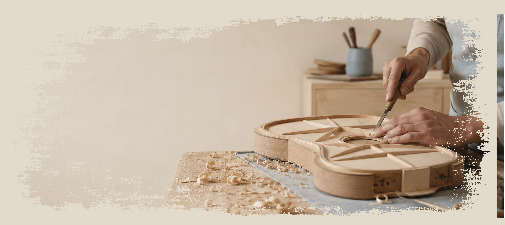
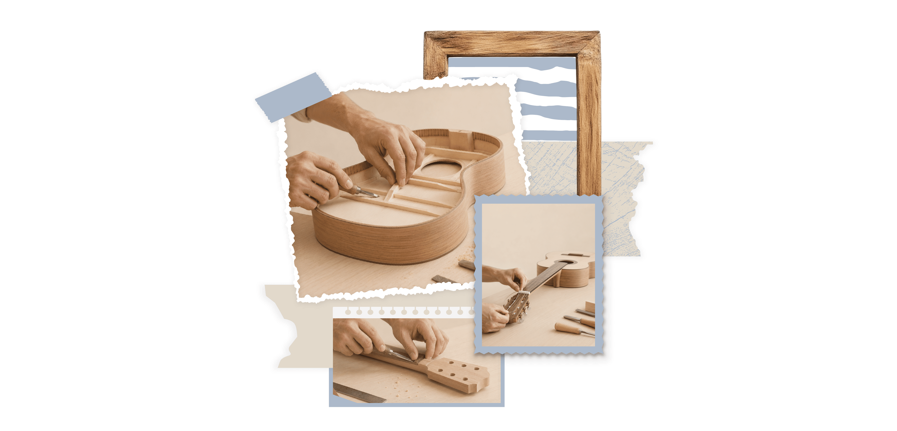
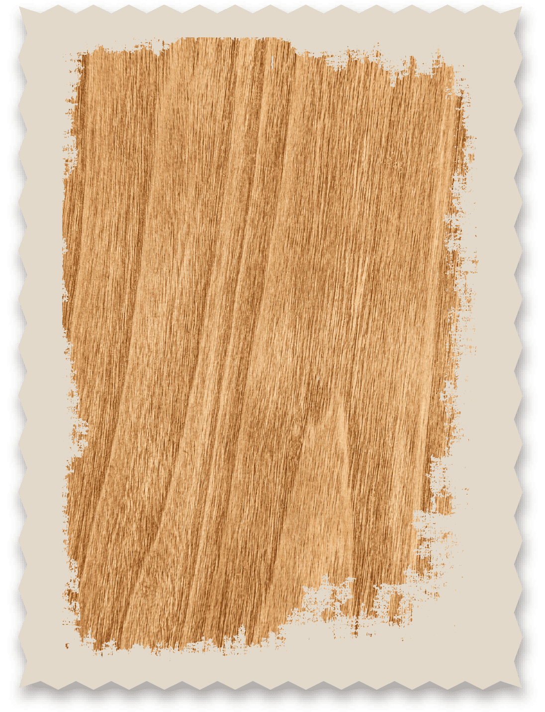
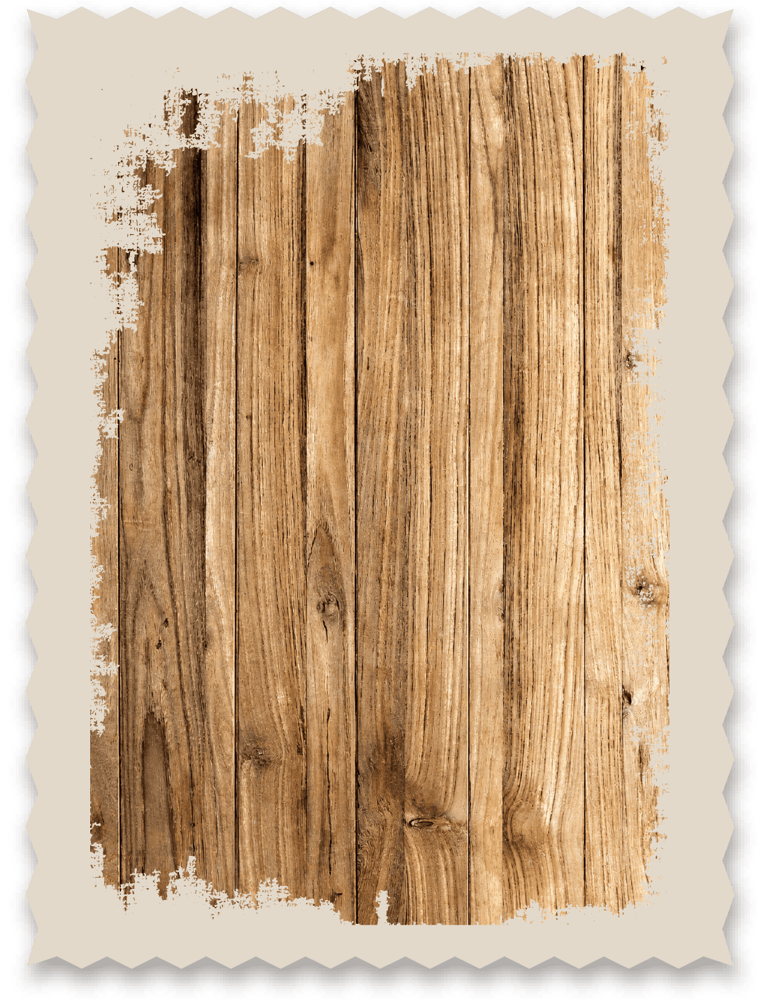
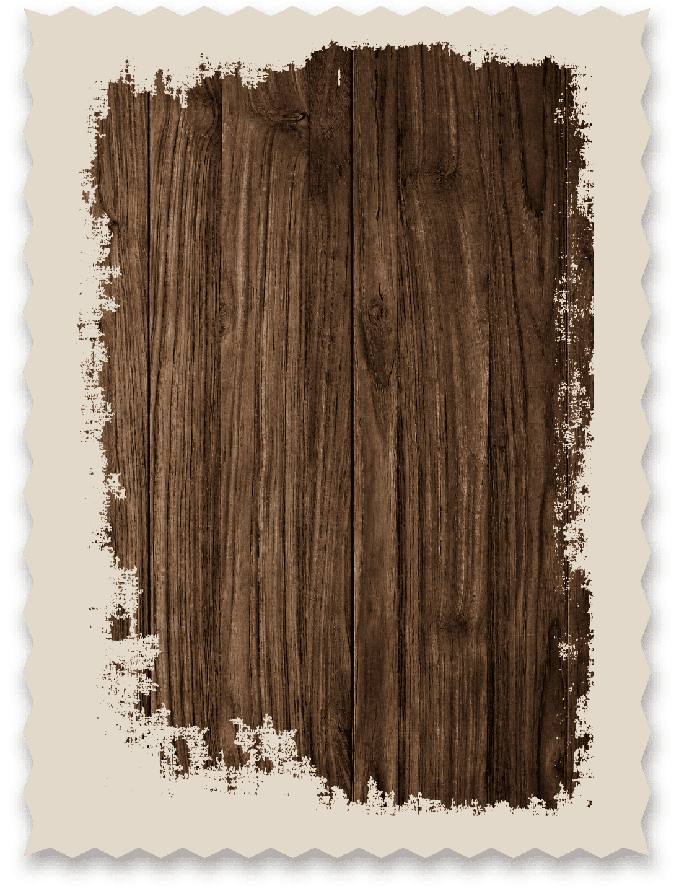

Aprendizaje
práctico
Trabajás desde el primer día sobre instrumentos reales, con herramientas profesionales y supervisión constante.

Somos un espacio dedicado a formar Luthiers especializados en la construcción, restauración y ajuste de instrumentos, combinando técnicas artesanales con una metodología práctica.
Ofrecemos cursos para quienes desean iniciarse o perfeccionarse desde la selección de la madera hasta el ajuste final del instrumento.

Trabajás desde el primer día sobre instrumentos reales, con herramientas profesionales y supervisión constante.
Máximo 4 alumnos por grupo. Seguimiento personalizado en cada etapa del proceso de construcción.
Aprendé junto a profesionales con décadas de experiencia en construcción, restauración y ajuste de instrumentos.
Herramientas profesionales disponibles durante toda la formación. Sin necesidad de invertir para empezar.
Cada etapa construye nuevas habilidades sin dejar vacíos técnicos. Del fundamento a la complejidad artesanal.
Al terminar, el instrumento que construiste es tuyo. Una pieza única que lleva tu firma y tu historia.


Nuestro taller fue diseñado bajo principios de acústica arquitectónica para que el ambiente mismo sea parte de la formación. Cada superficie, cada material, cada herramienta responde a una lógica sonora.

Tapa armónica de referencia. Densidad 420–480 kg/m³. Respuesta brillante en los armónicos superiores, proyección limpia y articulación precisa.

Fondo y aros de alto prestigio. Densidad 850–950 kg/m³. Calidez densa en los graves, sustain prolongado y firma tonal inconfundible.

Diapasón de élite. Densidad 1050–1200 kg/m³. Dureza extrema, tacto sedoso, respuesta al ataque inmediata.
 I
I
El programa fundacional. De la selección de maderas a la puesta a punto final. El alumno construye una guitarra acústica de concierto con supervisión individual permanente.
Inscribirse → II
II
Física del sonido aplicada al instrumento. Análisis modal, frecuencias de resonancia, diseño de braceado y optimización tonal mediante medición digital.
Inscribirse → III
III
Para quienes trabajan con instrumentos de época. Diagnóstico estructural, reconstrucción de partes faltantes, consolidación de barnices históricos.
Inscribirse →La madera elige al luthier antes de que el luthier la elija. Aprendemos a leer las vetas, la densidad y el sonido de los giros antes de cortar.
Geometría exacta. El plano del instrumento se transfiere sobre la madera con herramientas de precisión. Cada milímetro tiene consecuencias acústicas.
La caja de resonancia se construye pieza por pieza. El cierre de la tapa con el fondo es el momento donde el instrumento respira por primera vez.
La goma laca aplicada a muñequilla, el barniz nitrocelulósico o los aceites naturales. El acabado protege sin matar la vibración.
El instrumento se afina por primera vez. La acción de cuerdas, la intonación y el balance final se ajustan con el músico que lo tocará.

"Cada instrumento que construis,
refleja paciencia y presición.."
Selección de maderas. Reconocimiento acústico. Primera escucha activa de los materiales.
Diseño de la forma del cuerpo. Trazado del mástil. Cálculo de escala y posición de trastes.
Doblado de aros. Ensamble de fondo y tapa. Instalación del braceado interior.
Tallado del mástil. Ranuras de trastes. Encolado del diapasón y perfilado final.
Preparación de superficies. Aplicación de goma laca. Pulido progresivo por capas.
Puesta a punto. Presentación pública del instrumento. Primera ejecución frente a la comunidad de la escuela.
No es un requisito. El programa está diseñado para comenzar desde cero con un enfoque progresivo y supervisado.
El taller provee todas las herramientas durante el programa. Al matricularse, el alumno recibe una lista de materiales personales sugeridos (escuadra de precisión, calibre, cuchillas de marcar) que representa una inversión razonable para quien desee seguir trabajando luego del programa.
En luthería, los accidentes son parte del proceso formativo. Cada grieta, cada error de geometría y cada falla en el barniz enseña más que diez páginas de teoría. Los docentes acompañan la resolución de cada problema como parte del aprendizaje.
Completá el formulario y un coordinador académico se comunicará contigo dentro de las 48 horas hábiles para hablar sobre tu perfil e intereses.